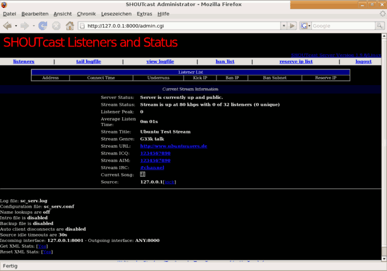

SHOUTcast
Archivierte Anleitung
Dieser Artikel wurde archiviert, da er - oder Teile daraus - nur noch unter einer älteren Ubuntu-Version nutzbar ist. Diese Anleitung wird vom Wiki-Team weder auf Richtigkeit überprüft noch anderweitig gepflegt. Zusätzlich wurde der Artikel für weitere Änderungen gesperrt.
Anmerkung: Eine aktuellere Anleitung liefert der Blogbeitrag Installing Shoutcast for Ubuntu Linux 12.04 LTS  .
.
Zum Verständnis dieses Artikels sind folgende Seiten hilfreich:
Möchte man eine eigene Wiedergabeliste (Playlist) live ins Internet streamen oder gar einen eigenen Radiosender betreiben, bietet sich die Server-Software SHOUTcast an – dieses Programm wird auch bei dem gleichnamigen Portal mit einer Übersicht zu vielen Internetradios eingesetzt. Es sind nur 2 Pakete einzurichten: Der SHOUTcast Server und das SHOUTcast DSP-Plugin. Wer Wert auf freie Software legt, sollte sich stattdessen mit Icecast beschäftigen.
Zum einen wird hier die manuelle Installation inklusive Konfiguration beschrieben, zum anderen der einfache Weg, welcher aus einer fertig konfigurierten, "ready to use"-Archivdatei besteht, die in der Funktionalität der manuellen Installation in nichts nachsteht.
Manuelle Installation¶
Folgende Archive müssen heruntergeladen  und in ein Verzeichnis entpackt [1] werden:
und in ein Verzeichnis entpackt [1] werden:
SHOUTcast Server (sc_serv_1.9.8_Linux.tar.gz)
SHOUTcast DSP-Plugin (sc_trans_posix_040.tgz)
Hier wird davon ausgegangen, dass der Server in das Verzeichnis ~/shoutcast/sc_serv und das DSP-Plugin in das Verzeichnis ~/shoutcast/sc_trans entpackt wurden.
Server konfigurieren¶
Man wechselt in das Verzeichnis, in das man den SHOUTcast Server entpackt hat und öffnet die Datei sc_serv.config in einem Texteditor seiner Wahl [2]; die Datei ist recht gut dokumentiert und die Einstellung sollte kein großes Problem darstellen. Hier nun ein Überblick über die wichtigsten Einstellungen:
MaxUser=32
Maximale Zuhörerzahl - dies richtet sich nach dem möglichen Upload und der Übertragungsqualität: Hat man beispielsweise einen Upload von 256 kbps und möchte mit 24 kbps streamen, ergibt das eine maximale Zuhöreranzahl von 10 (256 kbps/24 kbps=10). Dieser Wert ist nach eigenen Wünschen und Möglichkeiten anzupassen.
Password=changeme
Hier ist das Passwort einzustellen; die Standardeinstellung "changeme" ist unbedingt zu ändern.
Portbase=8000
Das ist der Port, auf dem der Server laufen soll. Im Normalfall braucht man hier nichts zu ändern, es sei denn, es läuft bereits ein anderer Dienst auf diesem Port.
IntroFile=c:\intro%d.mp3
Das ist die Intro-Datei, die beim Betreten des Streams abgespielt werden soll.
DSP-Plugin konfigurieren¶
Nun wechselt man in das Verzeichnis, in dem sich das DSP-Plugin befindet, und öffnet die Datei sc_trans.config mit einem Texteditor seiner Wahl. Hier nun wieder ein Überblick über die wichtigsten Einstellungen:
PlaylistFile=example.lst
Hier trägt man den Speicherort der Playlist ein, egal ob man nun eine mp3-Playlist oder direkt vom DSP streamen möchte. Belässt man die Einstellung so, wird die Playlist im DSP-Plugin-Ordner verwendet.
ServerIP=myserver.com
Hier ist die IP-Adresse des Servers einzutragen. Betreibt man Server und Plugin auf demselben PC, ist 127.0.0.1 einzutragen.
ServerPort=8000
Hier ist der Port einzutragen, auf dem der Server läuft. Hat man das bei der Server-Konfiguration geändert, muss man dies hier auch ändern.
Password=yourpassword
Hier ist das Passwort einzutragen, das man bei Server eingestellt hat.
StreamTitle=Ubuntu Test StreamURL=http://www.ubuntuusers.de Genre=G33k talk
Hier stehen die Informationen, die auf SHOUTcast über das Webradio stehen sollen, wie der Titel des Streams, eventuell die URL der Homepage, und das Genre des Streams.
Public=1
Gibt an, ob der Radiosender auf SHOUTcast.com gelistet werden soll; eine 1 für ja, 0 für nein.
Möchte man von DSP streamen, kann man hier noch die Input Channels und Kanäle einstellen. Dies ist nicht unbedingt nötig, aber man erspart sich eine Warnmeldung.
InputSamplerate=44100 InputChannels=2
Bitrate, Samplerate und Qualität lassen sich in dieser Datei ebenfalls einstellen, dazu gibt es in der Datei aber eine schöne Übersicht, was möglich ist.
Playlist¶
Hat man nun den Server und das DSP-Plugin konfiguriert, muss man nur mehr seine Playlist erstellen. Da hat man zwei Möglichkeiten, entweder man streamt eine vorgegebene Playlist, oder man streamt live vom DSP und der Zuhörer hört genau das, was man selbst auch hört. In beiden Fällen muss man das PlaylistFile mit einem Texteditor bearbeiten.
MP3-Playlist¶
Möchte man einfach nur eine Liste von mp3-Dateien streamen, muss man nur die gewünschten Dateien in sein PlaylistFile eintragen. Das könnte dann so aussehen:
/pfad/zu/mp3/verzeichnis/test_1.mp3 /pfad/zu/mp3/verzeichnis/test_2.mp3 /pfad/zu/mp3/verzeichnis/test_3.mp3 ...
Starten¶
Server starten¶
Um den Server nun zu starten, wechselt man per Terminal [3] in das Server-Verzeichnis und startet diesen mittels:
./sc_serv
Bekommt man dann eine solche Ausgabe:
******************************************************************************* ** SHOUTcast Distributed Network Audio Server ** Copyright (C) 1998-2004 Nullsoft, Inc. All Rights Reserved. ** Use "sc_serv filename.ini" to specify an ini file. ******************************************************************************* Event log: <06/04/07@04:53:48> [SHOUTcast] DNAS/Linux v1.9.8 (Feb 28 2007) starting up... <06/04/07@04:53:48> [main] pid: 7604 <06/04/07@04:53:48> [main] loaded config from sc_serv.conf <06/04/07@04:53:48> [main] initializing (usermax:32 portbase:8000)... <06/04/07@04:53:48> [main] No ban file found (sc_serv.ban) <06/04/07@04:53:48> [main] No rip file found (sc_serv.rip) <06/04/07@04:53:48> [main] opening source socket <06/04/07@04:53:48> [main] source thread starting <06/04/07@04:53:48> [main] opening client socket <06/04/07@04:53:48> [main] Client Stream thread [0] starting <06/04/07@04:53:48> [main] client main thread starting <06/04/07@04:53:48> [source] listening for connection on port 8001 <06/04/07@04:57:15> [sleeping] 0 listeners (0 unique)
ist alles in Ordnung. Außerdem kann man mit dem Webbrowser auf http://127.0.0.1:8000/ navigieren und hat dann auch so einen Überblick über seinen Server.
DSP-Plugin starten¶
Um nun das DSP-Plugin zu starten, wechselt man in den Ordner, in den man es entpackt hat, und startet es per Terminal:
./sc_trans
Bei einer solchen Ausgabe:
******************************************************************************* ** TRANScast Distributed Network Audio Content Provider ** Copyright (C) 2000 Nullsoft, Inc. All Rights Reserved. ** Use "sc_trans filename.conf" to specify a config file. ******************************************************************************* <06/04/07@05:18:34> [TRANSCast] DNAS/posix v0.400-LAME (Mar 4 2003) starting up... <06/04/07@05:18:34> [MAIN] PID: 8316 <06/04/07@05:18:34> [MAIN] Loaded config from sc_trans.conf <06/04/07@05:18:34> [MAIN] Loading playlist (example.lst) <06/04/07@05:18:34> [MAIN] Found (1) entries in playlist <06/04/07@05:18:34> [MAIN] Playlist decoder thread starting <06/04/07@05:18:34> [MAIN] Streaming thread starting <06/04/07@05:18:34> [DECODE] DSP (/dev/dsp) opened (16,2,44100) <06/04/07@05:18:34> [STREAM] Creating stream socket <06/04/07@05:18:34> [STREAM] Connected to host server <06/04/07@05:18:34> [STREAM] Host server gave success (OK2) <06/04/07@05:18:34> [STREAM] Stream to 127.0.0.1 established <06/04/07@05:18:34> [STREAM] Sending stream information <06/04/07@05:18:36> [MAIN] Title Updated
sollte der Stream gestartet sein, und man ist bereits "on Air". Desweiteren ändert sich im Server-Fenster auch etwas:
<06/04/07@05:42:08> [source] connected from 127.0.0.1 <06/04/07@05:42:08> [source] icy-name:Ubuntu Test Stream ; icy-genre:G33k talk <06/04/07@05:42:08> [source] icy-pub:1 ; icy-br:80 ; icy-url:http://www.ubuntuusers.de <06/04/07@05:42:08> [source] icy-irc:#channel ; icy-icq:1234567890 ; icy-aim:1234567890 <06/04/07@05:42:09> [active] 0 listeners (0 unique)
Nun ist der Stream von außen unter der Adresse
http://<Rechner-IP>:8000/listen.pls
zu erreichen. Bei <Rechner-IP> gehört die eigene IP-Adresse oder - falls vorhanden - der Domainname eingetragen.
Webinterface¶
Wie oben schon erwähnt, kann man über seinen Browser die Seite http://127.0.0.1:8000 aufrufen, um zu einem Webinterface zu gelangen, in dem man sich diverse Statistiken über Zuhörer, die letzten Songs und den Serverstatus ansehen kann. Des weiteren kann man sich hier mit dem Benutzernamen "Admin" und dem Passwort, das man in der Serverkonfiguration gesetzt hat, als Administrator einloggen, und sich die Logs ansehen, User oder ganze IP-Bereiche bannen, oder Platz für eine bestimmte IP reservieren.

Problemlösung¶
Erster Playlist-Eintrag wird übersprungen¶
Auf einigen Systemen kann es vorkommen, dass der erste Eintrag aus der Playlist übersprungen wird, egal ob das nun eine normale Playlist ist oder ob man vom DSP streamt. Wenn das der Fall ist, muss der erste Eintrag in der PlayListFile doppelt eingetragen werden; im Fall einer "normalen" Playlist sieht das PlayListFile dann so aus:
/pfad/zu/mp3/verzeichnis/test_1.mp3 /pfad/zu/mp3/verzeichnis/test_1.mp3 /pfad/zu/mp3/verzeichnis/test_2.mp3 /pfad/zu/mp3/verzeichnis/test_3.mp3 ...
Im Fall von einer Übertragung von DSP sieht das so aus:
DSP:/dev/dsp DSP:/dev/dsp
Fehlermeldung¶
[yp_add] yp.shoutcast.come gave error (nak) [yp_add] yp.shoutcast.come gave extended error (cannot see your station/computer (i: IP-Adresse:8000) from the internet, disable Internet sharing/NAT/firewall/ISP cache (Connection timed out).) source no data (30s timeout).Disconnecting
Diese Fehlermeldung bedeutet, dass der Server von außen nicht gesehen werden kann und somit auch nicht in die SHOUTcast-Datenbank aufgenommen werden kann. In den meisten Fällen muss man einfach nur den Router so konfigurieren, dass der Port, auf dem der Server läuft, an den entsprechenden PC weitergeleitet wird. Auf portforward.com findet man zu nahezu jedem Router eine Anleitung, wie man Port-Forwarding aktiviert (siehe auch Portweiterleitung).
Der einfache Weg¶
Diese Archivdatei beinhaltet alle benötigten Dateien inklusive einem Starter für den Server und das DSP-Plugin. Das Paket muss einfach nur heruntergeladen und entpackt werden. Anschließend braucht man nur noch in einem Terminal [1] die Datei startup aufzurufen, woraufhin direkt vom DSP gestreamt wird.
Nun ist der Stream von außen unter der Adresse http://<Rechner-IP>:8000/listen.pls zu erreichen. Bei <Rechner-IP> gehört die eigene IP-Adresse oder - falls vorhanden - der Domainname eingetragen.
Achtung!
In den Konfigurationsdateien sc_serv.conf und sc_trans.conf sollte man zumindest das Passwort ändern.
Achtung!
Beim Betreiben eines Webradios wird unter Umständen urherberrechtlich geschütztes Material ausgestrahlt und der Öffentlichkeit zur Verfügung gestellt. Dabei sind die gesetztlichen Bestimmungen zu beachten bzw. Gebühren an die GEMA und die GVL zu entrichten.

 Übersichtsartikel
Übersichtsartikel- Erstellt mit Inyoka
-
 2004 – 2017 ubuntuusers.de • Einige Rechte vorbehalten
2004 – 2017 ubuntuusers.de • Einige Rechte vorbehalten
Lizenz • Kontakt • Datenschutz • Impressum • Serverstatus -
Serverhousing gespendet von